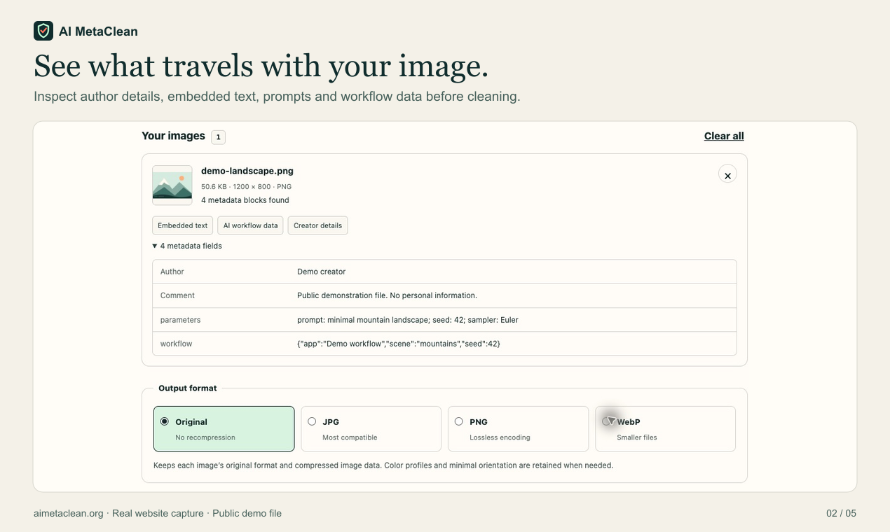
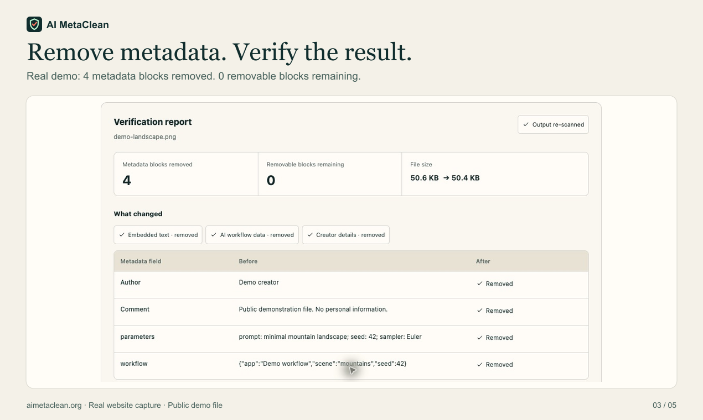

Container-level cleaning
The tool parses supported JPEG segments, PNG chunks, and WebP containers in JavaScript. It removes supported metadata and rebuilds the file locally. It is not an ExifTool wrapper or an image-upload API.
A small tool for image privacy
Inspect image metadata, clean a copy, and see what actually changed. Your files stay in your browser.
Free image cleaning · No account · JPG, PNG & WebP
01 / The reason
I'm a product manager. I tried a few metadata tools and didn't really like the experience, so I wanted to make one I'd enjoy using.
The core job is fairly simple, and a browser can already do it. What interested me was the interaction around it: seeing what's inside an image, understanding what gets removed, and checking the image-quality details I care about.
I didn't want the experience to end with a generic “done.” I wanted to inspect the cleaned file again and understand the result.
This isn't an attempt to replace every metadata utility. It's a smaller, visual workflow for people who just want to understand and clean an image before sharing it.
02 / The workflow
The report matters as much
as the download button.
Drop a supported image into the tool. Read the fields it finds: camera information, location, embedded text, prompts, or workflow data.
Choose Original format for metadata-only cleaning without a new image encode. The original file on your device is not overwritten.
Read the Cleaning Report, compare before and after, and re-open the downloaded copy in the metadata viewer if you'd like another check.


Real website captures using a public demonstration PNG with intentionally added sample metadata. Results depend on the file; these are not guarantees for every image.
03 / Under the hood
The tool parses supported JPEG segments, PNG chunks, and WebP containers in JavaScript. It removes supported metadata and rebuilds the file locally. It is not an ExifTool wrapper or an image-upload API.
In Original mode, encoded image data and relevant color data are preserved. A minimal JPEG orientation field can remain to keep a photo upright. Choosing an export format instead re-encodes the image.
The output is parsed again, and ExifReader separately checks supported EXIF, XMP, and IPTC fields. The report exposes retained technical data and checks dimensions, image data, color data, and decoded pixels where supported.
Decoded-pixel comparison uses browser-rendered, oriented sRGB RGBA pixels. It is limited to supported static images up to 16 megapixels and a time budget. Skipped checks are marked as not verified, not silently passed.
“Local” describes image processing. The main website still loads over the network and offers optional, consent-based analytics. Image bytes and metadata values are not sent to those services. This overview has no analytics, forms, or third-party scripts.
04 / A fair comparison
Often, you should use it.
ExifTool is a much broader metadata toolkit. AI MetaClean focuses on a smaller browser workflow.
| What matters | AI MetaClean | ExifTool |
|---|---|---|
| Interaction | A visual browser workflow; no installation | A command-line application and Perl library |
| Scope | JPG, PNG, and WebP image cleaning | Many image, RAW, audio, video, and document formats |
| Control | Inspect, clean supported metadata, and view a report | Read, write, copy, and selectively edit supported tags |
| File privacy | Images processed locally in your browser | Also runs locally; no upload needed |
For scripts, detailed tag editing, or a wider range of formats, ExifTool is the more capable choice. My focus is making the common image-cleaning task easy to follow.
Read ExifTool's own documentation05 / The boundaries
Removing file metadata doesn't make an image anonymous or its origin undetectable.
EXIF, GPS, XMP, IPTC, comments, PNG text and AI workflow fields, plus supported JPEG and PNG C2PA containers. Coverage depends on the format and structure.
Visible watermarks, pixel-embedded signals such as SynthID, recognizable content, platform records, or reverse-image matches. An empty report is not a forensic guarantee.
Metadata may contain useful authorship, licensing, or provenance records. Keep the original when those matter, and don't use cleanup to misrepresent where an image came from.
A work in progress
Image cleaning is free right now. I'd especially appreciate feedback on the interaction, confusing results, and files that don't behave as expected. RAW photos, video, and audio are ideas for later—not supported features today.
Open AI MetaClean